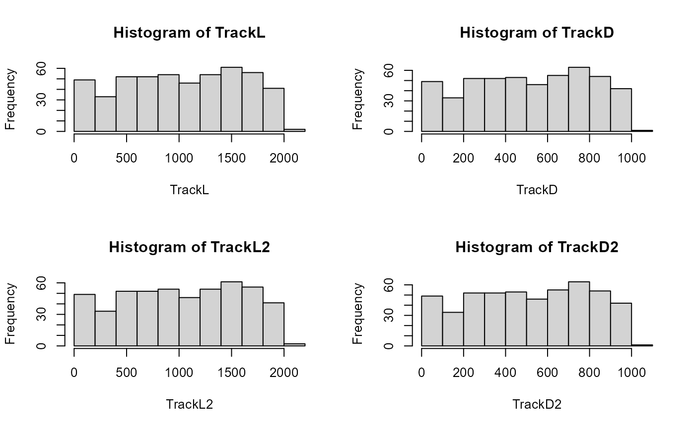

Given a list of tracking tracklets containing cartesian coordinates, this function returns 2 sublists containing a summary of video and tracklets data:
"VideoSummary": a list containing 4 elements:
"videoDuration_f": the length of the video expressed in frames.
"videoDuration_s": the length of the video expressed in seconds.
"frameR": the frame rate of the video as specified by the user.
"scale": the scaling factor applied to the trajectory coordinates as specifed by the user.
"TrackletSummary": a list containing 8 elements:
"trackNb": the total number of tracklets over the video (i.e., trajectories).
"totTrackDuration_f": the sum of the duration of all tracklets expressed in frames.
"totTrackDuration_s": the sum of the duration of all tracklets expressed in seconds
"totTrackLength_unit": the sum of the length of all tracklets in spatial unit as specified by the user (e.g., pixels, cm).
"trackletId": the tracklets identity.
"trackDuration_f": the duration of each tracklets expressed in frames.
"trackDuration_s": the duration of each tracklets expressed in seconds.
"trackLength_unit": the length of each tracklets in spatial unit as specified by the user (e.g., pixels, cm).
Arguments
- trackDat
A list of data frame containing tracking information for each tracklet (i.e., x.pos, y.pos, frame).
- frameR
A numeric value expressed in frames per second, the frequency at which frames are recorded/displayed in the video (optional).
- scale
A ratio corresponding to the scaling factor to be applied to the trajectory coordinates (e.g., size in cm / size in pixels; see
TrajScale, default = 1.- units
A character string specifying the spatial unit of the coordinates after scaling (default = "pixels").
- progress
A logical value (i.e., TRUE or FALSE) indicating whether a progress bar should be displayed to inform process progression (default = TRUE).
Examples
set.seed(2023)
# generate some dummy tracklets
## start to specify some parameters to generate tracklets
TrackN <- 500 # the number of tracklet to simulate
TrackL <- 1:1000 # the length of the tracklets or a sequence to randomly sample tracklet length
TrackList <- stats::setNames(lapply(lapply(seq(TrackN), function(i)
trajr::TrajGenerate(sample(TrackL, 1), random = TRUE, fps = 1)), function(j)
data.frame(
x.pos = j$x - min(j$x),
y.pos = j$y - min(j$y),
frame = j$time
)), seq(TrackN))
# compute and display tracking summary
TrackSummary <- MoveR::trackStats(TrackList,
frameR = 25,
scale = 1,
units = "pixels")
#> List of 2
#> $ VideoSummary :List of 4
#> ..$ videoDuration_f: num 1000
#> ..$ videoDuration_s: num 40
#> ..$ frameR : num 25
#> ..$ scale : num 1
#> $ TrackletSummary:List of 8
#> ..$ trackNb : int 500
#> ..$ totTrackDuration_f : int 257910
#> ..$ totTrackDuration_s : num 10316
#> ..$ totTrackLength_pixels: num 514867
#> ..$ trackletId : chr [1:500] "1" "2" "3" "4" ...
#> ..$ trackDuration_f : int [1:500] 886 280 572 477 491 713 297 227 363 461 ...
#> ..$ trackDuration_s : num [1:500] 35.4 11.2 22.9 19.1 19.6 ...
#> ..$ trackLength_pixels : num [1:500] 1762 555 1137 956 982 ...
# retrieve the TrackLength and duration in frame from the summary "manually"
TrackL <- TrackSummary[["TrackletSummary"]][["trackLength_pixels"]]
TrackD <- TrackSummary[["TrackletSummary"]][["trackDuration_f"]]
# or using listGet utility
TrackL2 <- MoveR::listGet(TrackSummary, "trackLength_pixels")
TrackD2 <- MoveR::listGet(TrackSummary, "trackDuration_f")
# plot the distribution of tracklets length and duration
par(mfrow = c(2, 2))
hist(TrackL)
hist(TrackD)
hist(TrackL2)
hist(TrackD2)
